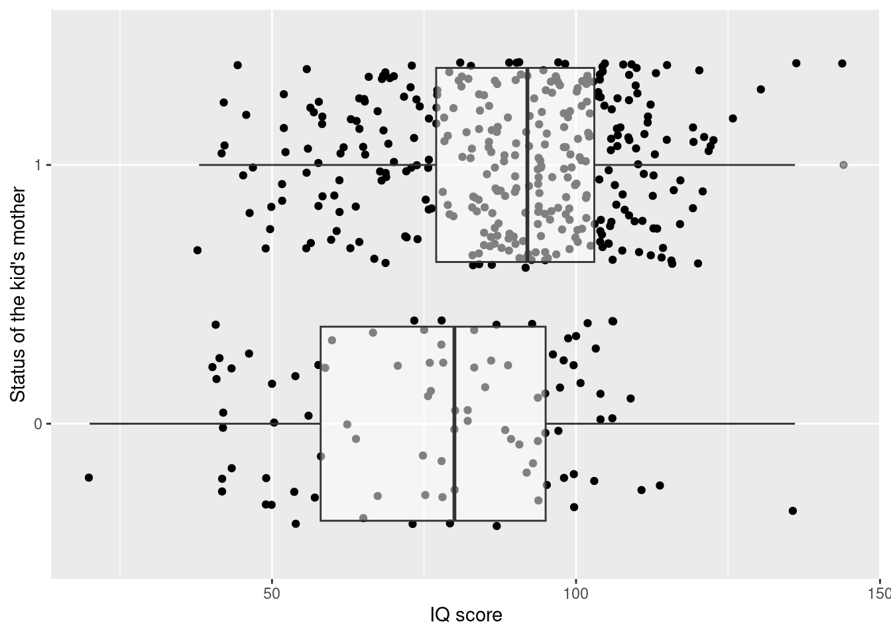

## Warning: to compile the notes you need the "bookdown" and the "broom" packages. Install them by## running install.packages, see the commented lines belowif (!require("tidyverse")) {install.packages("tidyverse")}
Loading required package: tidyverse
── Attaching core tidyverse packages ──────────────────────── tidyverse 2.0.0 ──
✔ dplyr 1.1.4 ✔ readr 2.1.5
✔ forcats 1.0.0 ✔ stringr 1.5.1
✔ ggplot2 3.5.0 ✔ tibble 3.2.1
✔ lubridate 1.9.3 ✔ tidyr 1.3.1
✔ purrr 1.0.2
── Conflicts ────────────────────────────────────────── tidyverse_conflicts() ──
✖ dplyr::filter() masks stats::filter()
✖ dplyr::lag() masks stats::lag()
ℹ Use the conflicted package (<http://conflicted.r-lib.org/>) to force all conflicts to become errors
if (!require("broom")) {install.packages("broom")}
Loading required package: broom
if (!require("patchwork")) {install.packages("patchwork")}
Loading required package: patchwork
Warning in library(package, lib.loc = lib.loc, character.only = TRUE,
logical.return = TRUE, : there is no package called 'patchwork'
# Downloading packages -------------------------------------------------------
- Downloading patchwork from CRAN ... OK [3.1 Mb in 0.48s]
Successfully downloaded 1 package in 0.81 seconds.
The following package(s) will be installed:
- patchwork [1.2.0]
These packages will be installed into "~/work/econ2024/econ2024/renv/library/R-4.3/x86_64-pc-linux-gnu".
# Installing packages --------------------------------------------------------
- Installing patchwork ... OK [installed binary and cached in 1.0s]
Successfully installed 1 package in 1.1 seconds.
if (!require("latex2exp")) {install.packages("latex2exp")}
Loading required package: latex2exp
Warning in library(package, lib.loc = lib.loc, character.only = TRUE,
logical.return = TRUE, : there is no package called 'latex2exp'
# Downloading packages -------------------------------------------------------
- Downloading latex2exp from CRAN ... OK [1.5 Mb in 0.81s]
Successfully downloaded 1 package in 0.95 seconds.
The following package(s) will be installed:
- latex2exp [0.9.6]
These packages will be installed into "~/work/econ2024/econ2024/renv/library/R-4.3/x86_64-pc-linux-gnu".
# Installing packages --------------------------------------------------------
- Installing latex2exp ... OK [installed binary and cached in 0.67s]
Successfully installed 1 package in 0.7 seconds.
Rows: 434 Columns: 5
── Column specification ────────────────────────────────────────────────────────
Delimiter: ","
dbl (5): kid_score, mom_hs, mom_iq, mom_work, mom_age
ℹ Use `spec()` to retrieve the full column specification for this data.
ℹ Specify the column types or set `show_col_types = FALSE` to quiet this message.
kids %>%head() %>% knitr::kable()
Table 6.1: First few rows of the data set kids.
kid_score
mom_hs
65
1
98
1
85
1
83
1
115
1
98
0
Variables description:
kid_score: (numeric) Kid’s IQ score.
mom_hs (numeric): This variable has only two possible values (a binary variable): 1 if the mother of the child has finished high school, and 0 otherwise.
For the sake of simplicity we will assume that the children in the sample (in the data set kids) were selected at random from all children living in the US at the time of the survey.
Research question: Do children whose mother did not finish a high school (mom_hs = 0) tend to achieve lower IQ scores compared to the children of mothers with a high school degree (mom_hs = 1).
6.2 The Linear Regression Model with a single binary predictor
## Where to get the datakids %>%ggplot(aes(## Map the status of the mother to the y-axis.## The factor function converts mom_hs to a factor variable## so that ggplot would not treat mom_hs as a continuous variable.y =factor(mom_hs),## Map the kid_score column to the x-axis.x = kid_score ) ) +geom_point(## Add some noise to each observation so that we can ## see the collection of dots. Without this noise## all dots would lie on two straight linesposition ="jitter" ) +## Draws the two boxplots to help us see the centers and the spreads## of the distributions of the scores in the two groupsgeom_boxplot(## Makes the boxplots transparent so that we can see the dots## behind themalpha =0.5 ) +## Sets human-readable labels for the two axeslabs(x ="IQ score",y ="Status of the kid's mother" )

Figure 6.1: IQ scores of the children by the status of their mother (high school degree/no high school degree). The plot adds a small amount of noise to the observations to avoid overplotting.
Exercise 6.1 Use the following code stub to compute the average IQ scores for the two groups of children in the kids data set.
# Compute the average IQ scores for the two groups# Uncomment the following code and fill in the ellipsis# kids %>%# group_by(...) %>%# summarize(# ... = mean(...)# )
Let us see how we can model the average IQ scores within a simple linear model.
\begin{align*}
& i = 1,\ldots, n = 434 \text{ observations}\\
& y_i: \text{IQ score} \\
& \hat{y}_i: \text{Predicted IQ score} \\
& x_i \in \{0, 1\}: \text{status of the mother}
\end{align*}
Let us see what the model coefficients mean. This becomes obvious when we consider the expected value of y (the IQ score) for the two possible values of x. For x = 1 (children with a mother with a HS degree) the expected IQ score is:
\mu_1 = \beta_0 + \beta_1 \cdot 1
\tag{6.2}
For x = 0 (children with a mother without a HS degree)
\mu_0 = \beta_0 + \beta_1 \cdot 0
\tag{6.3}
If you take the difference between equations 6.2 and 6.3 you will get:
Therefore, the constant in the model (\beta_0) equals the population average IQ score of children in the x = 0 group. The slope coefficient \beta_1 equals the difference between the population average IQ scores. Figure 6.2 visualizes the population of children (as the model in Equation 6.1 sees it). There are two groups of children in that population. The first has an average IQ score of \mu_0, the second group has an average IQ score of \mu_1. The children in both groups are normally distributed and the two distributions have the same standard deviation (spread).
Scale for x is already present.
Adding another scale for x, which will replace the existing scale.
Figure 6.2: Distribution of IQ scores in the population of children according to Equation 6.1.
Within that model our research question boils down to examining \beta_1 (the difference between the population averages). If \beta_1 is positive, then children born to a mother with a HS degree would tend to perform better at the IQ test.
The first obstacle to answering the research question is that we don’t know the value of \beta_1. Therefore, we rely on the sample to learn something about its value.
In the previous section we discussed the OLS estimator and now we will use it to find the best (in terms of lowest RSS) estimates for \beta_0 and \beta_1. As in the previous section will will find these using the lm function. We will also store the result of lm in an object so that we can use it later without running lm every time.
## Run lm and save the output in an object called "fit"fit <-lm(kid_score ~1+ mom_hs, data = kids)## Print the object storing the lm outputfit
Look at the output of lm and write down the estimated regression equation:
\begin{align*}
\hat{\mu} = 77.55 + 11.77 x
\end{align*}
This equation summarizes the sample. The children that we have selected and actually observed. For these children there was a difference of average IQ scores of 11.77. However, the sample only includes 434 children. A more interesting question is whether there is a difference between the average IQ scores between the two groups (mother with HS degree, mother without HS degree) in the population from which the sample was selected.
An interesting research hypothesis that we can test is whether the population coefficient \beta_1 is equal to zero, for example against a two-sided alternative \beta_1 \neq 0.
H_0: \beta_1 = 0 \\
H_1: \beta_1 \neq 0
A test of this hypothesis against the alternative is a t-test with a test statistic
If \beta_1 is really equal to zero, then this statistic follows a t-distribution with n - p degrees of freedom. The critical values of this test at \alpha = 0.05 probability of wrong rejection of the null hypothesis.
For the kids data set you can test this hypothesis using the output of summary.
summary(fit)
Call:
lm(formula = kid_score ~ 1 + mom_hs, data = kids)
Residuals:
Min 1Q Median 3Q Max
-57.55 -13.32 2.68 14.68 58.45
Coefficients:
Estimate Std. Error t value Pr(>|t|)
(Intercept) 77.548 2.059 37.670 < 2e-16 ***
mom_hs 11.771 2.322 5.069 5.96e-07 ***
---
Signif. codes: 0 '***' 0.001 '**' 0.01 '*' 0.05 '.' 0.1 ' ' 1
Residual standard error: 19.85 on 432 degrees of freedom
Multiple R-squared: 0.05613, Adjusted R-squared: 0.05394
F-statistic: 25.69 on 1 and 432 DF, p-value: 5.957e-07
The second row in the coefficients table corresponds to our \hat{\beta}_1 in our model notation (the coefficient of mom_hs). You can find the estimated standard error of \hat{\beta}_1 in the second column (Std. Error).
You can find this value in the column t value in the summary above. This t-statistic is shown in the regression output by almost all statistical software, because the hypothesis
H_0: \beta_1 = 0 \\
H_1: \beta_1 \neq 0
is particularly interesting. If true it implies that there are no population-level differences between the average IQ scores of the two groups of children.
In order to make a decision whether to reject this hypothesis or not, we compare the observed t-statistic to two critical values (because the alternative is two-sided).
The critical values at a five percent error probability (wrong rejection of a true null hypothesis) are derived from the t-distribution. You can find a detailed explanation in Chapter 7.
The quantiles of the t-distribution are
alpha <-0.05qt(alpha /2, df =nrow(kids) -2)
[1] -1.965471
qt(1- alpha /2, df =nrow(kids) -2)
[1] 1.965471
The observed t-statistic equals 5.0689 and is therefore greater than the upper critical value (1.96). Therefore we reject the null hypothesis at a significance level 1 - \alpha = 0.95 (this is another way to state the probability of wrong rejection of a true null hypothesis).
Apart from the point estimate for the difference of average IQ scores (11.77 points) we usually also want to communicate the uncertainty of this estimate. One description of that uncertainty is the (estimated) standard error of the estimator for the regression coefficient.
One way to construct a confidence interval for the coefficients is to invert the two-sided t-test (see Section 7.7 for more details).
We will use the critical values of the t-test at the 95 percent significance level to obtain an confidence interval (CI) with a 95 percent coverage probability:
Notice that the boundaries of the interval are random variables (because \hat{\beta}_1 and se(\hat{\beta}_1)) are random variables (they depend on the data). For the sample of children in kids we obtain estimates for these boundaries: [11.77 - 1.96 \cdot 2.322; 11.77 + 1.96 \cdot 2.322] \approx [7.2; 16.3]. Based on these estimated boundaries we would say that range of plausible values for the difference between the population IQ score averages between 7.2 and 16.3.
Notice that in interpreting the boundaries of the CI we don’t say that the probability of \beta_1 being between 7.2 and 16.3 is 0.95. Generally this statement does not make any sense, because we have assumed that \beta_1 is a fixed number (not random). The probability statement in Equation 6.4 does make sense, because the boundaries are random variables (depend on the data), but the statement P(7.2 < \beta_1 < 16.3) = 0.95 does not!
6.3 Mathematical Details (Optional)
6.3.1 The OLS Estimator in the Binary Predictor Case
In the case when x_i \in \{0, 1\} the average of x, i.e \overline{x} is simply the proportion of ones, lets say n_1 / n. Notice that the average of the squared x is the same as the average of x, because x only contains zeroes and ones (therefore x_i^2 = x_i). The average of the product of x and y is equal to the sum of y where the x = 1, because the other values in y are multiplied by zero.
Furthermore, the average of y is simply the weighted average of the two group means. Let there be n_0 observations with x_i = 0 and n_1 observations with x_i = 1.
Taking into account that \bar{x} = n_1 / n this equation simplifies to
\hat{\beta}_0 = \overline{y}_0
6.3.2 What about the standard errors?
In the case of the simple ANOVA model the standard errors of both coefficients are pretty easy to derive, because the estimators are simply a group average (\hat{\beta}_0) and the difference between two group averages (\hat{\beta}_1).
We can compute the variance of \hat{beta}_0. Note that when studying the statistical properties of an estimator like the OLS estimator for \beta_0 we treat the data y_i as random variables. In the following derivation we assume that the y_i are not correlated.
For the variance of \hat{beta}_1 we obtain. In the derivation we use the assumption of y_i being uncorrelated and the fact that the variance of a difference of uncorrelated random variables equals the sum of their variances.
The variances of the two coefficients involve the unknown parameter \sigma^2. From the expressions for the variances you will notice that the variances increase in \sigma^2. This should make sense intuitively. \sigma^2 describes how much noise the data contains (random deviations from the regression line). Estimating the coefficients from noisy data will result in uncertain estimates (high variances).
In order to arrive to estimates the coefficient variances we need a way to estimate \sigma^2 from the data. Here we will take a theorem from mathematical statistics that says that
is an unbiased estimator for \sigma. In the above expression n is the number of observations and p is the number of coefficients in the model. RSS is the residual sum of squares ?sec-ols-intro.
E\hat{\sigma}^2 = \sigma
Plugging in this estimator for \sigma^2 into Equation 6.5 and Equation 6.6 yields the following estimators for the variances of the model coefficients.
\begin{align*}
Var(\hat{\beta}_0) = & \frac{\hat{\sigma}^2}{n_0} \\
Var(\hat{\beta}_1) = & \hat{\sigma}^2 \left(\frac{1}{n_0} + \frac{1}{n_1}\right)
\end{align*}
Let us compare the two formulas with the standard errors from the lm output (printed here again for convinience).
summary(fit)
Call:
lm(formula = kid_score ~ 1 + mom_hs, data = kids)
Residuals:
Min 1Q Median 3Q Max
-57.55 -13.32 2.68 14.68 58.45
Coefficients:
Estimate Std. Error t value Pr(>|t|)
(Intercept) 77.548 2.059 37.670 < 2e-16 ***
mom_hs 11.771 2.322 5.069 5.96e-07 ***
---
Signif. codes: 0 '***' 0.001 '**' 0.01 '*' 0.05 '.' 0.1 ' ' 1
Residual standard error: 19.85 on 432 degrees of freedom
Multiple R-squared: 0.05613, Adjusted R-squared: 0.05394
F-statistic: 25.69 on 1 and 432 DF, p-value: 5.957e-07
The number of children in the two groups are n_0 = 93 and n_1 = 341. The number of observations is n = n_0 + n_1 = 434. The number of coefficients in the model is p = 2. We can compute the RSS by extracting the residuals from the model fit object (for example by using the residuals function).